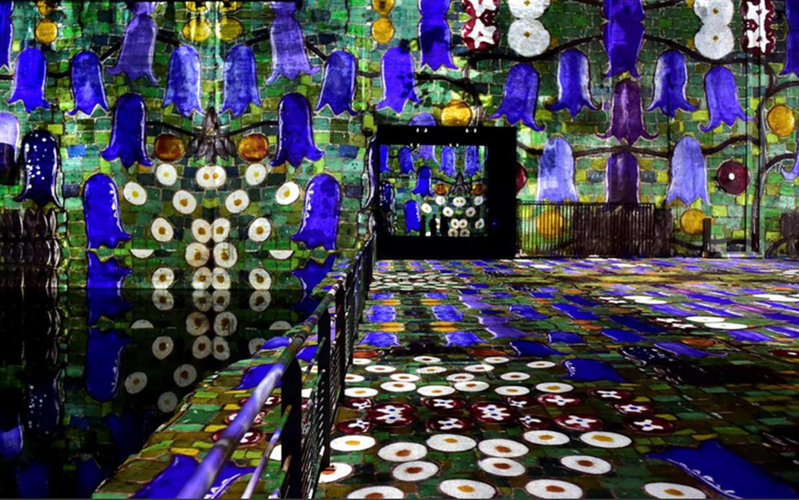
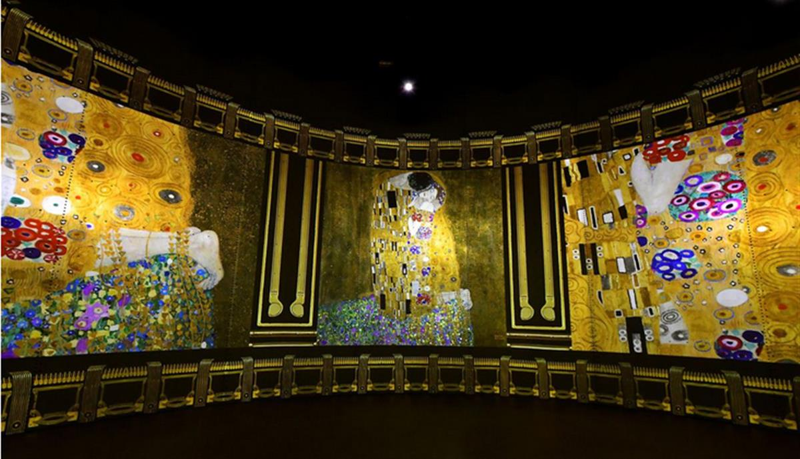

A “concrete monster” that once housed a fleet of Nazi U-boats in Bordeaux, France, is set to begin a new life as the world’s largest digital art gallery, reports Agence France-Presse.
A “concrete monster” that once housed a fleet of Nazi U-boats in Bordeaux, France, is set to begin a new life as the world’s largest digital art gallery, reports Agence France-Presse.
By Alex Fox
smithsonianmag.com
June 10, 2020 11:50AM
Former Nazi Submarine Base Transformed Into Digital Art Gallery
The concrete bunker once housed Axis U-boats. Now, it features floor-to-ceiling projections of works by Gustav Klimt, Paul Klee
The hulking, abandoned submarine base is one of five such World War II-era structures along the French coast, according to the Bassins de Lumières art center. Its primary purpose was to protect the German fleet from aerial attack while vessels were being repaired.
To exhibit artworks on a monumental scale, the gallery uses projectors that cast images onto the concrete walls of the base’s submarine pens, some of which are more than 300 feet long and 36 feet high, reports Charlotte Bellis for Al Jazeera.
Originally set to open this spring, Bassins de Lumières delayed its launch until June 10 due to COVID-19. The space’s inaugural exhibition spotlights Austrian painter Gustav Klimt, who is perhaps best known for The Kiss.

Works by Austrian artist Gustav Klimt are projected on June 3, 2020, at the Bassins de Lumières digital art center in Bordeaux. (Photo by Georges Gobet / AFP via Getty Images)Per a press release, Gustav Klimt: Gold and Color features portraits, landscapes and nudes in the artist’s signature gilded aesthetic. The show traces Klimt’s evolution from the neoclassical style he rejected to the Vienna Secession movement he pioneered. Also on view are projections of works by Klimt contemporary Egon Schiele, whose art is characterized by its “melancholic colors and tormented lines.”
A second smaller display centers on German artist Paul Klee’s colorful abstract creations. Titled Paul Klee: Painting Music, the exhibition pays tribute to its subject’s little-known musical talents, taking viewers “from an opera overture in an imaginary city to an underwater concerto amidst gold and multicolored fish,” according to the statement.
A new set of artists will be featured at the gallery next year.
“When we visited the space, we knew we had to work with it,” exhibition director Augustin de Cointet tells Al Jazeera. “We had this epiphany and we knew we had to put on exhibitions here.”
The cavernous submarine bunker is made up of more than 21 million cubic feet of reinforced concrete, reports AFP—enough to fill roughly 240 Olympic swimming pools. Its four parallel sections are crisscrossed by walkways that allow visitors to explore almost 130,000 square feet of immersive artwork powered by 90 video projectors, 80 speakers and more than 60 miles of optical cables.

Works by Austrian artist Gustav Klimt are projected on June 3, 2020, at the Bassins de Lumières digital art center in Bordeaux. (Photo by Georges Gobet / AFP via Getty Images)Around 6,500 volunteers, contractors and forced laborers from France, Spain, Belgian and Italy participated in the base’s construction, which commenced in September 1941, according to the gallery’s website. Art and architecture historian Mathieu Marsan tells Al Jazeera that the base, operational as of 1943, was in use for less than two years. It was large enough to protect and repair 15 large submarines, and though it was the target of multiple bombing raids throughout the war, it sustained minimal damage.
The Germans abandoned the city of Bordeaux—including the base—on August 28, 1944. As Marsan tells AFP, the bunker was so massive and well-built that the city deemed it too costly and dangerous to destroy.
After the war, artists gradually started showing interest in the concrete relic. In order for the site to become a public attraction, however, it had to undergo significant safety retrofitting.
Culturespaces, the group behind the new gallery, is piloting similar projects in Paris and Baux-de-Provence. The group has invested more than $15 million in what it says is the largest digital art center in the world.
In response to the pandemic, the gallery is requiring visitors to reserve time slots ahead of time, wear masks, disinfect their hands, maintain a distance of roughly three feet from other patrons and undergo body temperature screenings.
SOURCE: SMITHSONIAN MAGAZINE